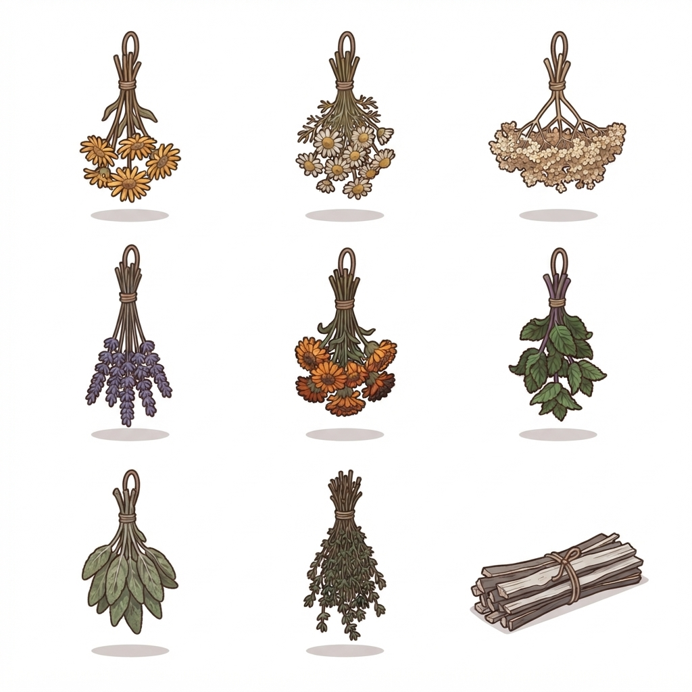
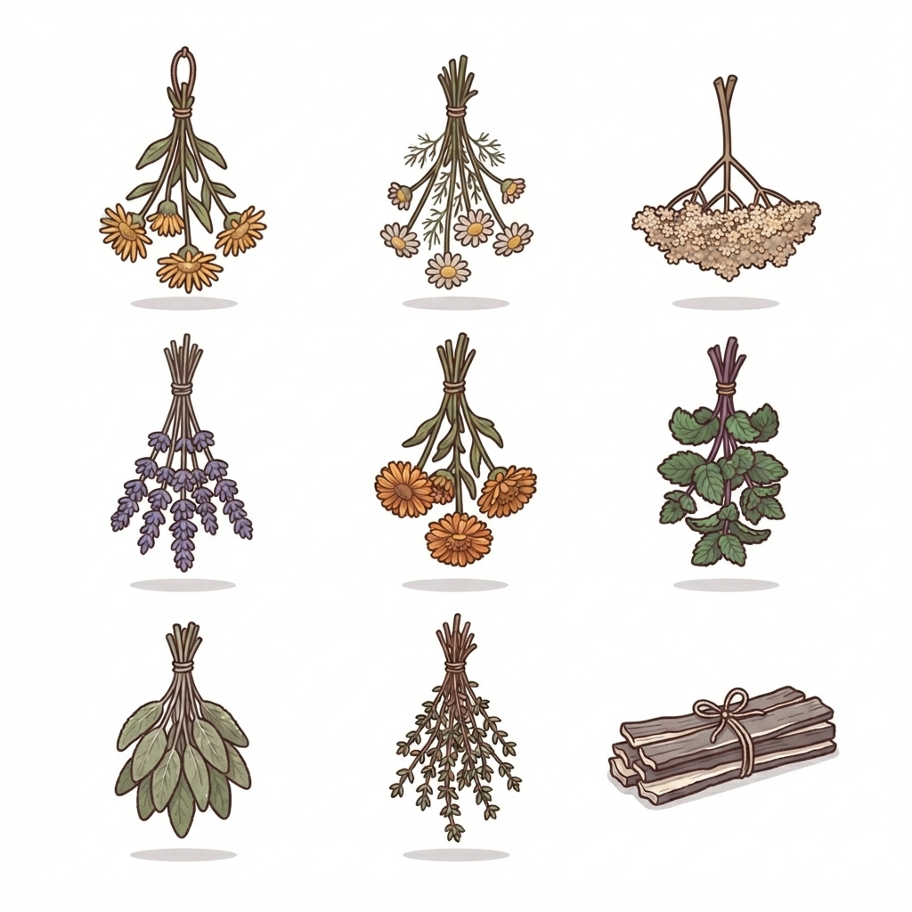
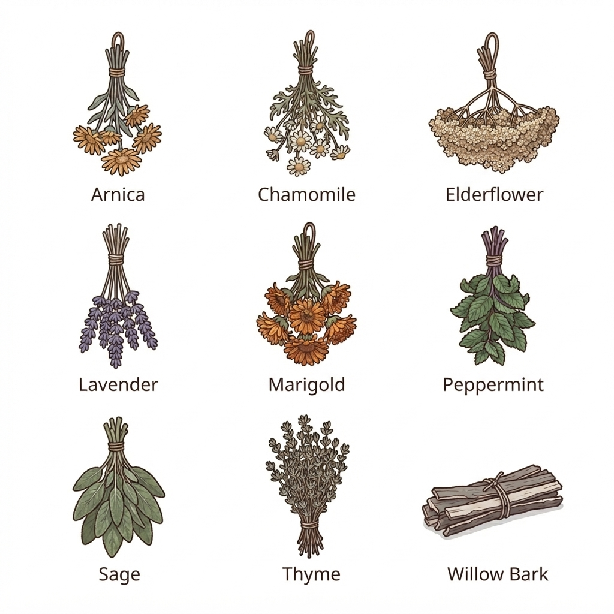

Green frame = the pick used in the game. To swap: python3 .claude/skills/openart-pictures/fetch.py pick sheet58-herbs-dried <version>, then import again.



A sprite sheet of exactly 9 separate bundles of dried healing herbs in 3 rows of 3, in exactly the art style of reference image 1 (use it only for the style): bright, friendly mobile-game cartoon, thick rounded dark outlines, flat colours with simple cel shading, chunky cute proportions, small soft shadow under each. Each is one small bundle hanging upside down from a short loop of brown string, flowers and leaves pointing down, the colours faded and dusty and the leaves a little curled, so it clearly looks dried, yet each plant is still recognisable. Plain pure white background, evenly spaced with wide white space between them, none touching, each one solid piece with no loose petals, crumbs, sparkles or motion lines beside it. No text, no letters, no numbers, no labels, no frames, no grid lines, no people, no hands, no hooks, no beams. Row 1: (1) dried arnica: faded yellow-orange ragged daisy flowers; (2) dried chamomile: small pale daisies with yellow centres and feathery leaves; (3) dried elderflower: a creamy-brown flat umbel of tiny flowers. Row 2: (4) dried lavender: dusty purple flower spikes on grey stems; (5) dried marigold: deep orange many-petalled flower heads; (6) dried peppermint: curled dark green toothed leaves on purple stems. Row 3: (7) dried sage: grey-green wrinkled oval leaves; (8) dried thyme: thin woody twigs with tiny leaves; (9) dried willow bark: a small stack of flat dry grey-brown bark strips, pale inside, tied with string (lying, not hanging).